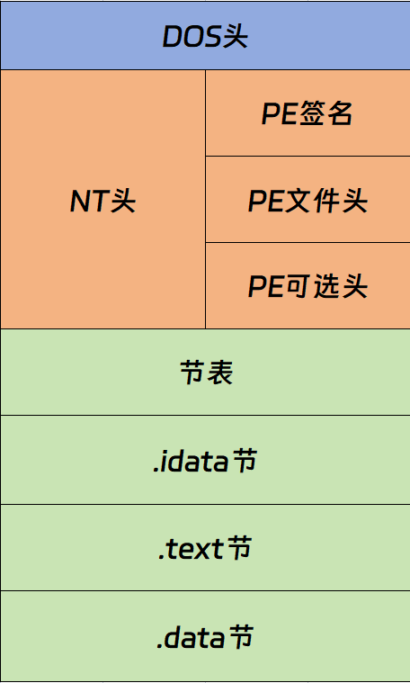

可执行文件¶
本章节将会对目前两大主流平台的可执行文件进行简单的介绍，便于我们了解可执行文件的基本结构。
目前我们常见的两大主流平台分别是 Linux 和 Windows；在前者环境下，其主要的可执行文件对应的名称为 ELF（Executable and Linking Format）文件；在后者环境下，其可执行文件对应的名称为 PE（Portable Executable）文件。
PE 文件基于 COFF (Common Object File Format) 扩展而来，而 ELF 则是在吸收 COFF 设计思想的基础上，为克服其不足而进行了系统化重构的一种目标文件格式。更加具体地来说，它是在 System V ABI 规范中定义的一种目标文件格式，在设计上借鉴了当时著名的 DEC（Digital Equipment Corporation）的 VAX/VMS 上所使用的 COFF 文件格式，并在此基础上进行了改进与完善。
ELF¶
首先我们来介绍 ELF 文件：
ELF 文件标准里把系统中采用 ELF 格式的文件主要分为以下四种：
- 可重定位文件（Relocatable File），这类文件由源文件编译但尚未链接，包含代码和数据，可用来链接成可执行文件或共享目标文件，静态链接库为此类文件的集合，该类文件对应于 Linux 中的 .o ，Windows 的 .obj。
- 可执行文件（Executable File），这类文件是通过链接的，可执行的目标文件，通常也被称为程序。比如 Linux 下的 ELF 可执行文件(一般没有扩展名)， Windows 下的 .exe。
- 共享目标文件（Shared Object File），这种文件包含代码和数据，通常是一段位置独立的代码（Position Independent Code, PIC），链接过程中可以使用这种文件跟其他可重定位文件/共享目标文件一起构建出新的目标文件。或者在可执行文件加载时，动态加载器(即动态链接器)可以将几个共享目标文件装载入内存，并与可执行文件链接，作为进程映像来运行。对应于 Linux 中的 .so，Windows 中的 .dll。
- 核心转储文件（Core Dump File），当进程意外终止，系统可以将该进程地址空间的内容及终止时的一些信息转存到核心转储文件。 对应 Linux 下的 core dump。
| ELF Header |
|---|
| .text |
| .data |
| .bss |
| Other Section ... |
| String Tables / Symbol Tables ... |
| Other Section ... |
| Section Header Table |
(1) ELF 文件头 ( ELF Header )，位于文件的开始位置，它的主要目的是定位文件的其他部分。它包含了整个文件的基本属性：如文件大小、版本、目标机型、程序入口等。
(2) .text：反汇编工具读取并处理的部分，这一部分存储的是机器码。如果没有 .text 节，我们很难去对一个可执行文件进行反汇编分析。
(3) .data：包括已经初始化的 全局变量 和 局部静态变量 。
(4) .bss：存放的是 未初始化或初始化为 0 的全局变量和局部静态变量 。在编译和链接阶段，.bss 节只记录所需空间的大小， 不占用目标文件的磁盘存储空间 。当程序被加载时，加载器会在内存中额外分配相应大小的空间，并将其内容初始化为 0，这些空间就对应了 .bss 节的内容。
(5) Other Section：还有一些可选的节，比如 .rodata 节存储只读数据(只读变量和字符串常量)，.debug 节存储调试信息等等，具体遇到可以查看相关文档。
(6) String Tables：字符串表。在 ELF 文件中，会用到很多字符串，比如节名，变量名等。所以 ELF 将所有的字符串集中放到一个表里，在开头和结尾放上null字符，保证每一个字符串都以’\0’结尾。程序可以使用字符串在表中的偏移来引用字符串，这样在 ELF 中引用字符串只需要给出数组下标即可。字符串表在 ELF 中也以节(Section)的形式保存。特别的， .shstrtab 是专供 section name 的字符串表， .dynstr 表示动态链接的字符串表。
(7) Symbol Tables：符号表，通常分为 .dynsym 和 .symtab ，前者包含参与动态链接的符号，是后者的一个功能子集。在链接过程中，我们将函数和变量统称为 符号，函数名和变量名就是 符号名。每个符号条目都包含一个叫做 符号值 (Symbol Value)的字段，对于变量和函数，符号值通常表示符号在其所属节中的偏移，链接完成后表示为其虚拟地址。因为链接过程会将多个不同的目标文件合并在一起，而不同的目标文件之间会相互引用变量和函数，所以链接器就需要借助符号表完成 符号解析 (Symbol Resolution)和 重定位 (Relocation)的工作。
(8) Section Header Table：是一个重要的部分，它描述了 ELF 文件包含的所有节的信息，比如每个节的节名、节长度、在文件中的偏移、读写权限和一些节的其他属性。
typedef struct{
Elf32_Word sh_name; //节区名，是节区头部字符串表节区（Section Header String Table Section）的索引。名字是一个 NULL 结尾的字符串。
Elf32_Word sh_type; //为节区类型
Elf32_Word sh_flags; //节区标志
Elf32_Addr sh_addr; //如果节区将出现在进程的内存映像中，此成员给出节区的第一个字节应处的位置。否则，此字段为 0。
Elf32_Off sh_offset; //此成员的取值给出节区的第一个字节与文件头之间的偏移。
Elf32_Word sh_size; //此 成 员 给 出 节 区 的 长 度 （ 字 节 数 ）。
Elf32_Word sh_link; //此成员给出节区头部表索引链接。其具体的解释依赖于节区类型。
Elf32_Word sh_info; //此成员给出附加信息，其解释依赖于节区类型。
Elf32_Word sh_addralign; //某些节区带有地址对齐约束.
Elf32_Word sh_entsize; //某些节区中包含固定大小的项目，如符号表。对于这类节区，此成员给出每个表项的长度字节数。
}Elf32_Shdr;
| 名称 | 类型 | 属性 | 含义 |
|---|---|---|---|
| .bss | SHT_NOBITS | SHF_ALLOC + SHF_WRITE | 包含将出现在程序的内存映像中的未初始化数据。根据定义，当程序开始执行，系统将把这些数据初始化为 0。此节区不占用文件空间。 |
| .comment | SHT_PROGBITS | (无) | 包含版本控制信息。 |
| .data | SHT_PROGBITS | SHF_ALLOC + SHF_WRITE | 这些节区包含初始化了的数据，将出现在程序的内存映像中。 |
| .data1 | SHT_PROGBITS | SHF_ALLOC + SHF_WRITE | 这些节区包含初始化了的数据，将出现在程序的内存映像中。 |
| .debug | SHT_PROGBITS | (无) | 此节区包含用于符号调试的信息。 |
| .dynamic | SHT_DYNAMIC | 此节区包含动态链接信息。节区的属性将包含 SHF_ALLOC 位。SHF_WRITE 位是否被设置取决于处理器。 | |
| .dynstr | SHT_STRTAB | SHF_ALLOC | 此节区包含用于动态链接的字符串，大多数情况下这些字符串代表了与符号表项相关的名称。 |
| .dynsym | SHT_DYNSYM | SHF_ALLOC | 此节区包含了动态链接符号表。 |
| .fini | SHT_PROGBITS | SHF_ALLOC + SHF_EXECINSTR | 此节区包含了可执行的指令，是进程终止代码的一部分。程序正常退出时，系统将安排执行这里的代码。 |
| .got | SHT_PROGBITS | 此节区包含全局偏移表。 | |
| .hash | SHT_HASH | SHF_ALLOC | 此节区包含了一个符号哈希表。 |
| .init | SHT_PROGBITS | SHF_ALLOC + SHF_EXECINSTR | 此节区包含了可执行指令，是进程初始化代码的一部分。当程序开始执行时，系统要在开始调用主程序入口之前（通常指 C 语言的 main 函数）执行这些代码。 |
| .interp | SHT_PROGBITS | 此节区包含程序解释器的路径名。如果程序包含一个可加载的段，段中包含此节区，那么节区的属性将包含 SHF_ALLOC 位，否则该位为 0。 | |
| .line | SHT_PROGBITS | (无) | 此节区包含符号调试的行号信息，其中描述了源程序与机器指令之间的对应关系。其内容是未定义的。 |
| .note | SHT_NOTE | (无) | 此节区中包含注释信息，有独立的格式。 |
| .plt | SHT_PROGBITS | 此节区包含过程链接表（procedure linkage table）。 | |
| .relname .relaname | SHT_REL SHT_RELA | 这些节区中包含了重定位信息。如果文件中包含可加载的段，段中有重定位内容，节区的属性将包含 SHF_ALLOC 位，否则该位置 0。传统上 name 根据重定位所适用的节区给定。例如 .text 节区的重定位节区名字将是：.rel.text 或者 .rela.text。 | |
| .rodata .rodata1 | SHT_PROGBITS | SHF_ALLOC | 这些节区包含只读数据，这些数据通常参与进程映像的不可写段。 |
| .shstrtab | SHT_STRTAB | 此节区包含节区名称。 | |
| .strtab | SHT_STRTAB | 此节区包含字符串，通常是代表与符号表项相关的名称。如果文件拥有一个可加载的段，段中包含符号串表，节区的属性将包含 SHF_ALLOC 位，否则该位为 0。 | |
| .symtab | SHT_SYMTAB | 此节区包含一个符号表。如果文件中包含一个可加载的段，并且该段中包含符号表，那么节区的属性中包含 SHF_ALLOC 位，否则该位置为 0。 | |
| .text | SHT_PROGBITS | SHF_ALLOC + SHF_EXECINSTR | 此节区包含程序的可执行指令。 |
但是 ELF 文件并不只有链接视角哦~
如果读者感兴趣的话，可以去了解一下运行视角下的 ELF 结构，在这个结构下我们不再以“节”进行划分，而是以“段(Segment)”进行。
程序加载时依赖 Program Header Table，而非 Section Header Table。
PE¶
下面我们来介绍 PE 文件：实际上 PE 与 ELF 文件基本相同，也是采用了基于节的格式。
在支持该扩展的编译器（如 GCC 或 MSVC）中，可以通过编译器指令将变量或函数放入自定义节（使用 GCC 中 __attribute__(section('name')) 扩展属性）。
在此之前，我们来了解一些基本概念：
| Name | Description |
|---|---|
| Image File | 镜像文件：包含以 EXE 文件为代表的 可执行文件、以 DLL 文件为代表的 动态链接库。因为他们常常被直接“复制”到内存中执行，有“镜像”的某种意思。 |
| Section | 节：是 PE 文件中 代码 或 数据 的基本单元。从功能角度可以粗略分为 代码类节 和 数据类节 ，但实际 PE 文件中存在多种不同用途的节。 |
| VA | 虚拟地址：英文全称 Virtual Address。即为在内存中的地址。 |
| RVA | 相对基址偏移：英文全称 Relative Virtual Address。偏移(相对虚拟地址)。相对镜像基址的偏移。 |
PE 文件结构¶

DOS 头：是用来兼容 MS-DOS 操作系统的，目的是当这个文件在 MS-DOS 上运行时提示一段文字，大部分情况下是：This program cannot be run in DOS mode. 还有一个目的，就是指明 NT 头在文件中的位置。
NT 头：包含 windows PE 文件的主要信息，其中包括一个 'PE' 字样的签名，PE 文件头(IMAGE_FILE_HEADER) 和 PE 可选头(IMAGE_OPTIONAL_HEADER32或IMAGE_OPTIONAL_HEADER64)。
节表：是 PE 文件后续节的描述，Windows 根据节表的描述加载每个节。
节：每个节实际上是一个容器，可以包含代码、数据 等等，每个节可以有独立的内存权限，比如代码节默认有读/执行权限，节的名字和数量可以自己定义，未必是上图中的三个。
此处我们可以看到，其与 ELF 文件的结构大差不差，而且这几个常见的节名称作用也都是差不多的，这里就不再重复了。
RVA 与 VA 的关系¶
在我们执行一个 PE 文件之后，这个 PE 文件会被装载到内存中，之后这个 PE 文件中的每一个部分都会有一个固定的虚拟地址(VA)，我们通常叫做内存地址。其中，一个 PE 文件最头部的地址叫做基地址（ImageBase），也可以简单理解为开始地址。此后，以基地址为基础，后面的所有地址都会有自己的相对基址偏移（RVA），也就是其虚拟地址与基地址的差值，称为偏移量。
我们可以用一个简单的公式来计算虚拟地址： VA = ImageBase + RVA 。
由此我们可以知道：
假如一个 PE 文件的头地址 ImageBase 为 0x140000000，其中的某一个虚拟地址 VA 为 0x140000EF48，那么该地址相对于头地址的偏移量 RVA = 0x140000EF48 - 0x140000000 = 0xEF48
那在逆向工程的过程当中，我们如何来辨别这两种文件呢？
我们将其拖到 xdbg 中，查看 HEX 窗口，在右侧的字符串区域，可以找到答案。
ELF 文件会出现 “ELF” 相关的字符串，一般都是出现在头部；PE 文件在其头部有 “MZ” 字样，其附近还会出现 “DOS” 以及 “PE” 等关键字样。
通过这些特征，我们即可方便又快速地找到其文件类型。
当然了，我们还可以使用查壳工具进行辨别，如使用Detect It Easy(DIE)。